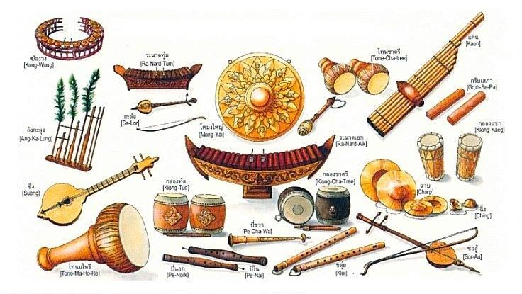

ประเภทของเครื่องดนตรี
เครื่องดนตรีเป็นอุปกรณ์ที่ใช้สร้างเสียงเพื่อประกอบการบรรเลงเพลง โดยแต่ละชนิดมีลักษณะ โครงสร้าง และวิธีการทำให้เกิดเสียงแตกต่างกัน เครื่องดนตรีสามารถแบ่งออกเป็นหลายประเภทตามลักษณะการเกิดเสียง เช่น เครื่องสาย เครื่องเป่า เครื่องตี และเครื่องลิ่มนิ้ว เครื่องสาย ได้แก่ กีตาร์ ไวโอลิน และซอ ซึ่งเกิดเสียงจากการสั่นสะเทือนของสาย เครื่องเป่า ได้แก่ ขลุ่ย ทรัมเป็ต และแซกโซโฟน ซึ่งเกิดเสียงจากการสั่นของอากาศภายในเครื่อง เครื่องตี ได้แก่ กลอง ฉิ่ง และระนาด โดยใช้การตีเพื่อสร้างเสียง ส่วนเครื่องลิ่มนิ้ว ได้แก่ เปียโนและออร์แกน ซึ่งใช้แป้นหรือลิ่มนิ้วในการควบคุมเสียง เครื่องดนตรีแต่ละประเภทมีบทบาทสำคัญในการสร้างทำนอง จังหวะ และเสียงประสานของบทเพลง การเรียนรู้ประเภทของเครื่องดนตรีช่วยให้ผู้เรียนสามารถเลือกเครื่องดนตรีที่เหมาะสมกับความสนใจ และเข้าใจหน้าที่ของเครื่องดนตรีในการบรรเลงเพลงได้ดียิ่งขึ้น